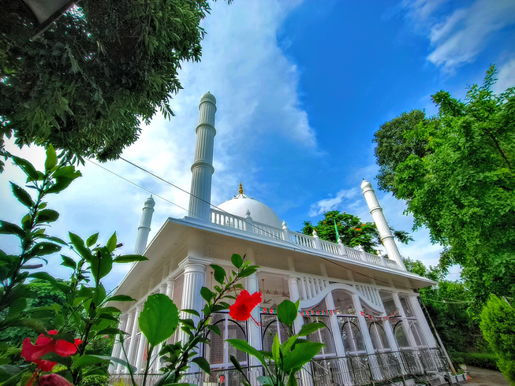
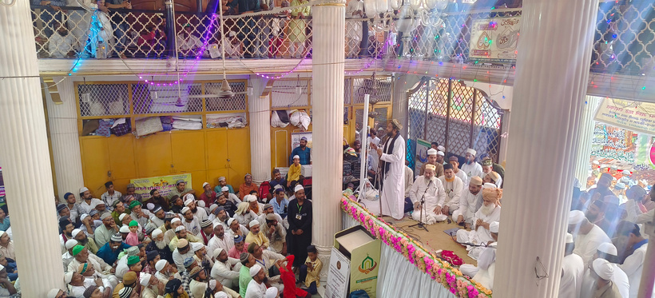
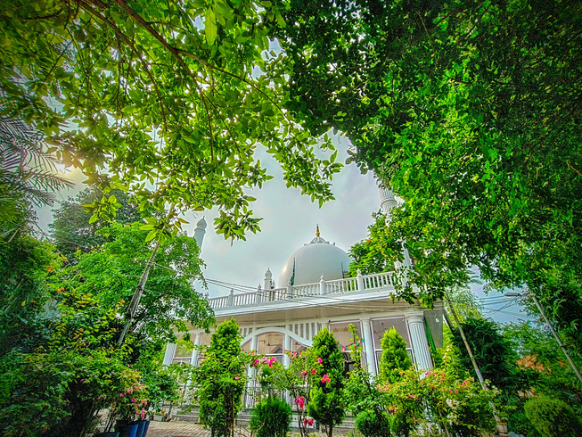
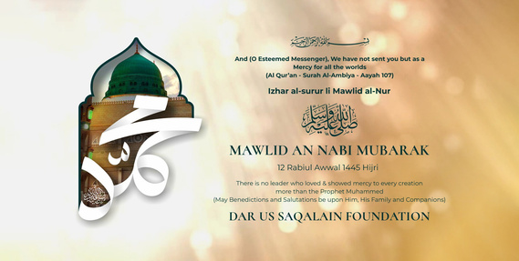
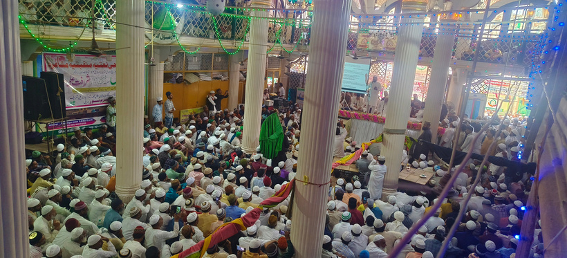
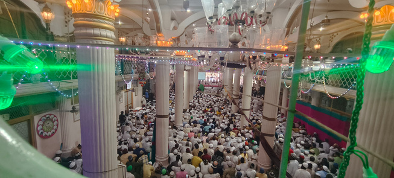
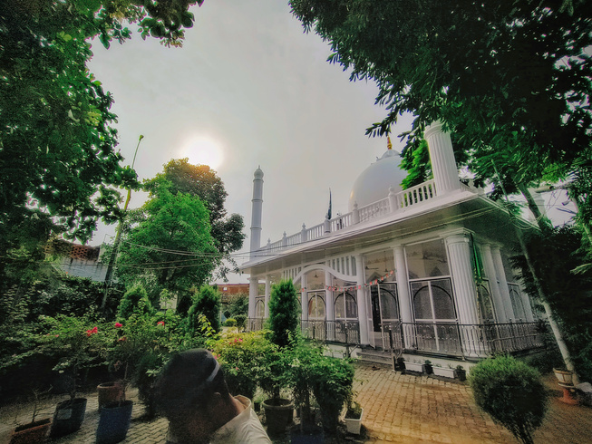
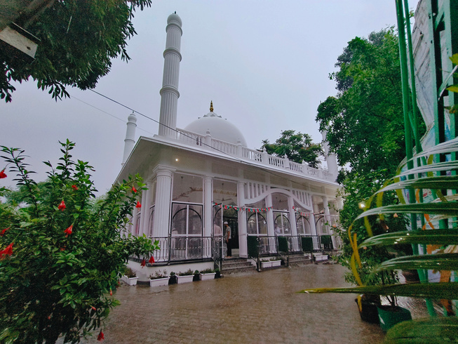
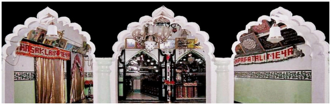

Visual Collection
Photo & Video Gallery
۞
Explore sacred photographs of Dargah Hazrat Shah Sharafat Ali Miyan R.h., Dargah Hazrat Shah Shuja'at Ali Miyan R.h., and Urs Mubarak celebrations.
🕌 DARGAH HAZRAT SHAH SHARAFAT ALI MIYAN R.H.
Shahbad, Bareilly Sharif, Uttar Pradesh






🕌 DARGAH HAZRAT SHAH SHUJA'AT ALI MIYAN R.H.
Kakrala Sharif, Badayun, Uttar Pradesh




🌹 URS MUBARAK CELEBRATIONS & PROCESSIONS
Sakalani Karwan from Mumbai, Bhopal, Gwalior & Bareilly Junction




1
2
3
4
5
Video Archives
Video Gallery
۞
▶
18:45
Annual Urs-e-Sharafati Documentary
Highlights of processions, Sandal Sharif, and Kul ceremony in Bareilly Sharif.
▶
24:10
Mehfil-e-Sama & Manqabat-e-Sharafat
Spiritual verses sung in praise of Hazrat Shah Sharafat Ali Miyan R.h.
▶
32:15
Teachings of the Holy Patron Saint
Keynote lectures by eminent scholars on the Quadriyah Mujaddidiyah path.
1
2
3